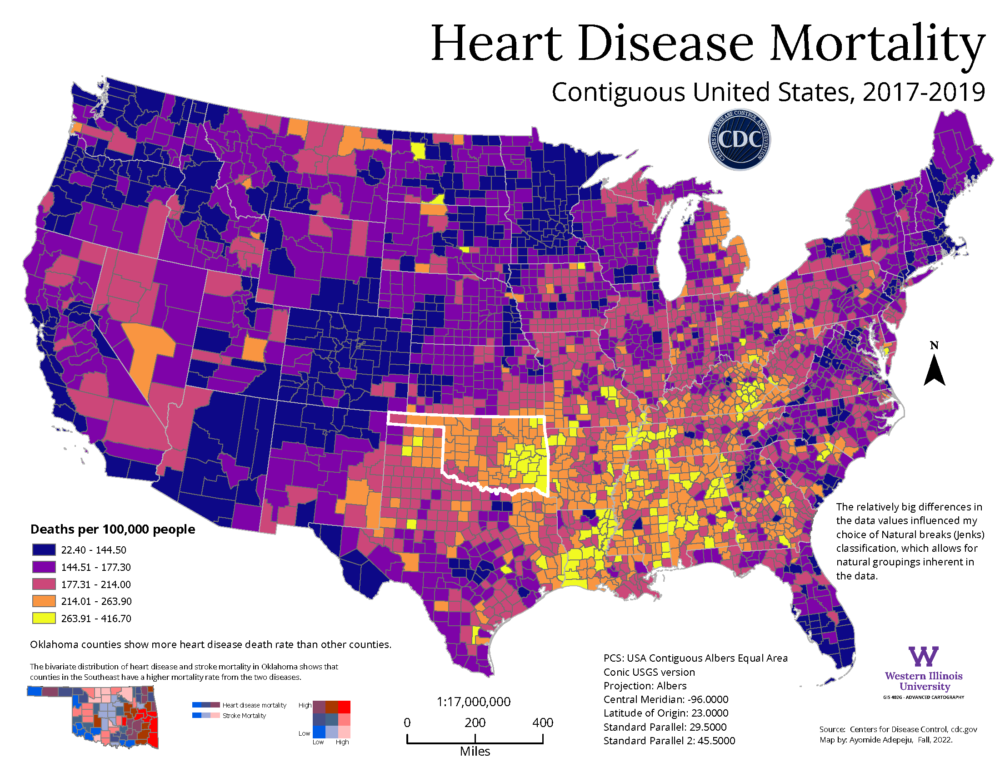

|
This map was created using classic cartographic techniques to mimic a hand-drawn historical map. I used the watercolor style created by John Nelson to symbolize the layers and trees image by Warren Davison. The Mississippi River Water Line has a pen-sketched look, which was achieved by the polygon strokes in a multi-layered style by John Nelson. The choice of colors for each layer was crucial to the aesthetics of the map. |
|  |
The heart disease mortality rate in the contiguous United States is mapped. The major decisions here are the method of classification and the color scheme. I used the "natural breaks" classification method, which allows for natural data groupings and chose a color ramp from blue to yellow, with blue representing a few deaths while yellow represents many deaths. The location with the most deaths informed the inset map, this combines the heart disease mortality with the stroke mortality to show regions mostly affected by the two diseases. A bivariate color symbology was used, with blue representing a small number of deaths and red representing a large number of deaths. Because this is a thematic map, I used an equal-area projection to minimize distortion. This map was featured during the plenary session of the 2023 ESRI International User Conference and the 2024 ESRI Federal GIS Conference. |

|
This map shows the population of Georgia in 2021. An equal area projection was used for this map to ensure minimum distortion. The dot size, dot color, and dot value are the three major considerations made during the map-making process. A dot size of 0.5 was most effective, and the cordovan color was chosen. The dot value allowed for at least two dot placements in the least populated region. Also, a census tract was used for the placement of the dots to constrain their random placement. The labeling of nearby states and the ocean was done for proper color blending with the main map. |